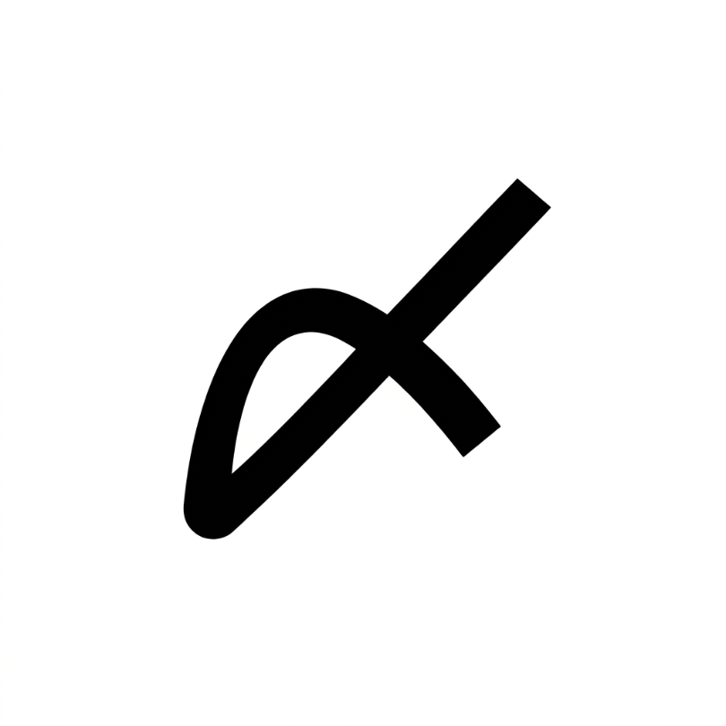

// last safe moment
提出期限を記録するアプリではありません。まだ間に合う「最後の開始時刻」を知らせ、提出忘れを防ぐアプリです。
最後の開始時刻 ＝ 期限 −（作業時間 ＋ 余裕時間）
fun criticalStartMillis(assignment: Assignment, marginMinutes: Int): Long =
assignment.deadlineEpochMillis - (assignment.effortMinutes + marginMinutes) * MINUTE_MILLISdomain/Timing.kt
締切そのものではなく、この時刻を過ぎたらもう間に合わないというラインを計算します。過ぎても未完了なら、提出物Ultraが緊急通知を出します。
作業時間には「本気でやれば終わる時間」を入力します。余裕時間は全課題共通の設定で、初期値は30分です。
Android は最終的な通知設定の主導権を利用者に残しています。ですから「絶対に鳴る」と根拠なく約束はしません。 代わりに、今この端末で緊急通知が成立するかを毎回確認し、本番と同じ通知を実際にテストできるようにしています。
テスト通知は本番と同じ処理を通ります。通知チャンネル・音・振動・サイレントモードの例外・表示内容まで同一で、 違うのは渡すデータがテスト用であることだけです。テストで鳴ったなら、本番でも同じように鳴ります。
必要な設定が足りないときは、曖昧に動作を続けず「緊急通知できない」ことを明示し、該当する端末設定へ案内します。
| 通知の表示 | 緊急通知・リマインダーを表示するため |
|---|---|
| 正確なアラーム | 最後の開始時刻ちょうどに発火させるため |
| おやすみモードへのアクセス | サイレント中でも緊急通知だけは鳴らすため |
| 全画面通知 | ロック画面の上にアラーム画面を出すため |
| 他のアプリの上に表示 | 通知が溜まっているときでも全画面を最前面に出すため（推奨） |
| バッテリー最適化の除外 | 省電力機能による通知の遅延を防ぐため（推奨） |
通信を一切行いません。入力した提出物や設定は、すべて端末の中だけに保存されます。
Google Play にはありません。インストール時、提供元不明のアプリの許可が必要です。
過去のバージョンは GitHub Releases でご覧いただけます。